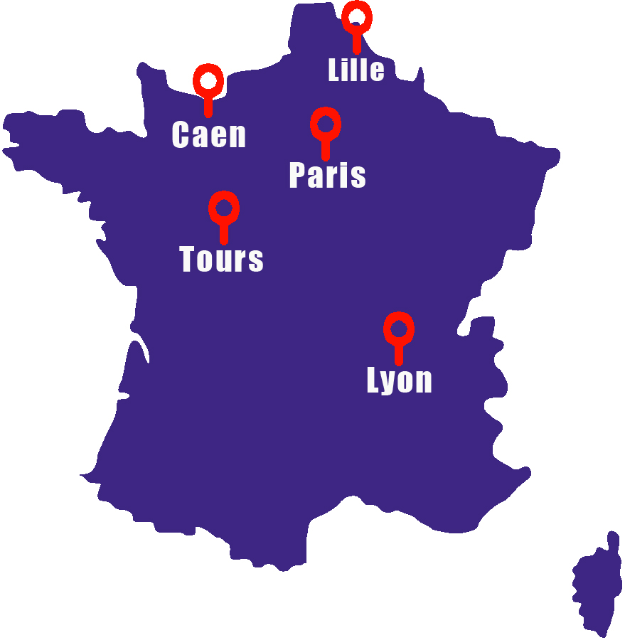

Supinfo since 1965_
Fondée en 1965, SUPINFO fut l’une des premières écoles supérieures à avoir compris la place qu’allait prendre l’informatique dans les entreprises et la société. Grâce à son parcours en 5 ans (Master of Engineering), SUPINFO permet à des jeunes en quête de formations concrètes, opérationnelles, « orientées métiers », de trouver des carrières qui correspondent à leur passion et leur motivation, aussi de procurer aux entreprises des milliers de cadres techniques et des ingénieurs férus d’innovation. Depuis 2020, SUPINFO propose de suivre son parcours innovant grâce au Distance Learning Program, depuis l’un de ses campus hybrides en Blended Learning ou à distance depuis son campus virtuel. Les campus hybrides IONIS permettent aux étudiants ou travailleurs de suivre leur formation dans un campus d’accueil.
des campus partout en France
+15,000
Anciens
86%
De CDI à la sortie de l'école
5
Campus en France